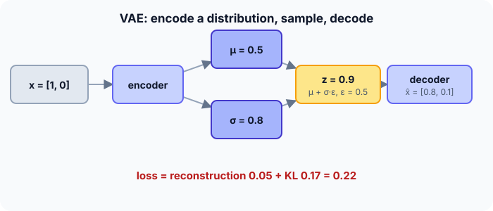

Prerequisites
- Autoencoders.
- Normal distributions: mean $\mu$, standard deviation $\sigma$.
- Probabilistic models (helpful).
The analogy
Everyday analogy
A plain autoencoder files each photo at one exact spot on a shelf, leaving empty gaps; pick a random spot and you find nothing.
A VAE files each photo as a fuzzy region, and a rule (the KL term) packs all regions tightly around the middle of the shelf. Now any spot you pick is covered by something, so the decoder can produce a sensible photo from it.
How it works
Loss: $L = \underbrace{\lVert x - \hat x \rVert^2}_{\text{reconstruction}} + \underbrace{\tfrac12 \big(\sigma^2 + \mu^2 - 1 - \ln \sigma^2\big)}_{\text{KL}(\mathcal{N}(\mu, \sigma^2) \,\|\, \mathcal{N}(0, 1))}$ per latent dimension; $z = \mu + \sigma \varepsilon$ with $\varepsilon \sim \mathcal{N}(0, 1)$.
Start with one VAE step by hand
1-D code: the encoder gives $\mu = 0.5$, $\sigma = 0.8$. The random draw is $\varepsilon = 0.5$. The input is $x = [1, 0]$ and the decoder outputs $\hat x = [0.8, 0.1]$. Predict, then open "Check".
Example: predict before you read
Step 1. Sample the code with the reparameterization trick: $z = \mu + \sigma \varepsilon$.
Check
$z = 0.5 + 0.8 \cdot 0.5 = 0.9$.
Step 2. Cover the next line and guess: the reconstruction error $\lVert x - \hat x \rVert^2$.
Check
$0.2^2 + 0.1^2 = 0.04 + 0.01 = 0.05$.
Step 3. The KL term $\tfrac12(\sigma^2 + \mu^2 - 1 - \ln \sigma^2)$ (use $\ln 0.64 \approx -0.446$), and the total loss.
Check
$\tfrac12(0.64 + 0.25 - 1 + 0.446) \approx 0.168$. Total $\approx 0.05 + 0.168 = 0.218$.

Quick recall: Before reading further, cover the text above and say out loud: what does a VAE's encoder output, compared with a plain autoencoder?
Check your answer
A distribution (a mean and a standard deviation per latent dimension) instead of a single code.
Finish the picture: the two forces
The two loss terms pull in different directions.
- Reconstruction alone. Predict what the encoder would do to $\sigma$.
Check
Shrink $\sigma$ towards 0 and spread the means apart, to make each code precise: the VAE would turn back into a plain autoencoder with gaps.
- KL alone. Predict the codes.
Check
Every input would get $\mu = 0$, $\sigma = 1$: a perfectly regular code space that carries no information about the input. The sum balances precision against regularity.
Quick recall: Without scrolling up, say out loud: what is the KL term when $\mu = 0$ and $\sigma = 1$?
Check your answer
0: the code distribution is exactly the standard normal, so there is no penalty.
Full worked calculation
A VAE with a 2-D latent space. For one input the encoder outputs $\mu = [0.5, -1]$ and $\sigma = [0.8, 0.5]$. We sample a code with the reparameterization trick, compute the KL term per dimension, and assemble the loss.
| Latent dim | $\mu$ | $\sigma$ | $\varepsilon$ (drawn) | $z = \mu + \sigma\varepsilon$ | KL term |
|---|---|---|---|---|---|
| 1 | 0.5 | 0.8 | 0.5 | 0.9 | 0.168 |
| 2 | −1 | 0.5 | −1 | −1.5 | 0.818 |
| Total | 0.986 |
-
1The encoder outputs a distribution
$$q(z \mid x) = \mathcal N\big([0.5, -1],\; \text{diag}(0.8^2, 0.5^2)\big)$$Instead of one code, the encoder describes a small cloud of plausible codes: a centre $\mu$ and a spread $\sigma$ per dimension.
-
2Reparameterization: sample
$$\varepsilon \sim \mathcal N(0, 1) = [0.5, -1] \;\Rightarrow\; z = [0.5 + 0.8 \cdot 0.5,\; -1 + 0.5 \cdot (-1)] = [0.9,\; -1.5]$$The randomness is drawn separately, then shifted and scaled. Because $z$ is now a simple formula in $\mu$ and $\sigma$, gradients can flow through the sampling into the encoder.
-
3KL term, dimension 1
$$\tfrac12\big(\mu^2 + \sigma^2 - 1 - \ln\sigma^2\big) = \tfrac12\big(0.25 + 0.64 - 1 + 0.446\big) = 0.168$$This measures how different this dimension's cloud is from the standard normal $\mathcal N(0, 1)$. It is 0 only when $\mu = 0$ and $\sigma = 1$.
-
4KL term, dimension 2
$$\tfrac12\big(1 + 0.25 - 1 + 1.386\big) = 0.818$$Dimension 2 is penalised much more: its centre is far from 0 ($\mu = -1$) and its cloud is narrow ($\sigma = 0.5$, so $-\ln\sigma^2 = 1.386$). The KL pushes clouds to stay wide and centred.
-
5Total loss
$$L = \underbrace{\lVert x - \hat x \rVert^2}_{\text{reconstruction}} + \underbrace{0.168 + 0.818}_{\text{KL} = 0.986}$$The decoder turns $z = [0.9, -1.5]$ into $\hat x$; its error is the first part. With a reconstruction error of 0.05 the total would be 1.036. The two parts pull in opposite directions: precise codes vs. well-organised latent space.
-
6Generating new data
$$z \sim \mathcal N(0, I), \quad \text{e.g. } z = [0.3, -0.2] \;\Rightarrow\; \hat x = \text{decoder}(z)$$Because the KL kept every cloud close to $\mathcal N(0, 1)$, codes drawn from it land in regions the decoder knows. That is what a plain autoencoder cannot do.
What the numbers tell us
VAE loss = reconstruction + KL. The KL per dimension is $\tfrac12(\mu^2 + \sigma^2 - 1 - \ln\sigma^2)$: here 0.168 + 0.818 = 0.986.
The reparameterization trick $z = \mu + \sigma\varepsilon$ is what makes the random sampling step trainable with backpropagation.
The rule in plain words
Encode $x$ into $\mu$ and $\sigma$; sample $z = \mu + \sigma \varepsilon$; decode to $\hat x$. Minimise reconstruction error + KL divergence from $\mathcal{N}(0, 1)$.
To generate, sample $z \sim \mathcal{N}(0, 1)$ and decode. Nearby codes give similar outputs, so you can interpolate between examples.
Quick recall: Before you read the code, describe the reparameterization trick in your own words. Then check below.
Check your answer
Instead of sampling $z$ directly, sample a standard normal $\varepsilon$ and compute $z = \mu + \sigma \varepsilon$, so gradients can flow through $\mu$ and $\sigma$.
The code
Read this code after you have computed the loss by hand. It will make more sense.
double reparam(double mu, double sigma, double eps) { return mu + sigma * eps; }
double kl_term(double mu, double sigma) { /* KL(N(mu, sigma^2) || N(0, 1)) */
return 0.5 * (sigma * sigma + mu * mu - 1 - log(sigma * sigma));
}
double vae_loss(double x[], double xh[], int d, double mu, double sigma) {
double rec = 0;
for (int j = 0; j < d; j++) rec += (x[j] - xh[j]) * (x[j] - xh[j]); /* reconstruction */
return rec + kl_term(mu, sigma);
}Definition
What you just did, in one line: a variational autoencoder encodes each input as a probability distribution over codes, samples from it with the reparameterization trick, and trains with reconstruction error plus a KL penalty that keeps codes close to $\mathcal{N}(0, 1)$, which makes it a generative model.
flowchart LR
X["x"] --> ENC["encoder"]
ENC --> MU["μ"]
ENC --> SG["σ"]
EPS["ε ~ N(0, 1)"] --> Z["z = μ + σ ε"]
MU --> Z
SG --> Z
Z --> DEC["decoder"]
DEC --> XH["x̂"]
Putting numbers on it
Quick recall: Before looking at the formula, predict: how do you generate a brand-new sample after training?
Check your answer
Draw $z$ from $\mathcal{N}(0, 1)$ and run only the decoder.
The two loss terms for our example:
$$\underbrace{(1 - 0.8)^2 + (0 - 0.1)^2}_{0.05} + \underbrace{\tfrac12\big(0.64 + 0.25 - 1 - \ln 0.64\big)}_{\approx 0.168} \approx 0.218$$| $\mu$ | $\sigma$ | KL term | Meaning |
|---|---|---|---|
| 0 | 1 | 0 | Exactly the prior: no penalty |
| 0.5 | 0.8 | 0.168 | Our example |
| 2 | 1 | 2.0 | Mean far from 0 is costly |
| 0 | 0.1 | ≈ 1.81 | Very precise code is costly |
Warning
VAE samples are often blurry: with a squared-error reconstruction loss, the decoder averages over plausible outputs. GANs and diffusion models usually produce sharper images.
Exam tip
Name the two loss terms and what each does (reconstruction: be accurate; KL: be regular), write $z = \mu + \sigma\varepsilon$, and explain why this trick is needed for backpropagation.
Common mistakes
- Sampling $z$ directly from $\mathcal{N}(\mu, \sigma^2)$ in code, which blocks gradients to $\mu$ and $\sigma$.
- Forgetting the KL term, which turns the VAE into a plain autoencoder with a gappy code space.
- Having the encoder output $\sigma$ directly; in practice it outputs $\ln \sigma^2$ so that $\sigma$ stays positive.
Try it yourself
Exercise 1 (warm-up)
Compute the KL term for $\mu = 0$, $\sigma = 1$, and for $\mu = 1$, $\sigma = 1$.
Hint
$\ln 1 = 0$.
Answer
0 and $\tfrac12(1 + 1 - 1 - 0) = 0.5$.
Exercise 2 (a bit harder)
With $\mu = 0.5$, $\sigma = 0.8$, compute $z$ for $\varepsilon = -1$ and $\varepsilon = 2$. How does that show what the encoder "believes" about the input? Write your answer down before you open it.
Show answer
$z = -0.3$ and $z = 2.1$. The encoder says the input's code is most likely near 0.5 but uncertain by about ±0.8; different draws explore that region, and the decoder must handle all of them.
Did you know?
Did you know?
Kingma and Welling published the VAE in 2013 ("Auto-Encoding Variational Bayes"), the same Kingma who co-created the Adam optimiser.
Latent diffusion image generators use a VAE to compress images into a small latent space, then run the diffusion process there.
Key points to remember
If you remember one thing from each line, remember the because.
- The encoder outputs a distribution because that fills the code space instead of leaving isolated points.
- The KL term keeps codes near $\mathcal{N}(0, 1)$ because random samples from $\mathcal{N}(0, 1)$ must decode to sensible data.
- The reparameterization trick enables training because it moves the randomness into $\varepsilon$, outside the path of the gradients.
- The two loss terms compete because precise codes help reconstruction but cost KL.
- VAEs can generate because decoding any sample from the prior lands in a region the decoder learned.
Self-check questions
Answer these in order, out loud. They follow the page, so your answers become the script of your video.
- How is a VAE like filing photos as fuzzy regions on a shelf?
Sample answer
Each photo covers a region, and a rule packs the regions around the middle, so any spot you pick decodes to something sensible.
- Compute $z$, the reconstruction error, the KL term and the total loss for the example.
Sample answer
$z = 0.9$; reconstruction 0.05; KL ≈ 0.168; total ≈ 0.218.
- Why does
reparamtakeepsas an input rather than sampling inside?A good answer mentions gradients.
Sample answer
Keeping the random draw $\varepsilon$ outside makes $z$ a simple deterministic function of $\mu$ and $\sigma$, so backpropagation can compute gradients for them.
- So what is a VAE, in one sentence?
Sample answer
An autoencoder whose encoder outputs a distribution, trained with reconstruction error plus a KL penalty towards $\mathcal{N}(0, 1)$, so it can generate new data.
- Why does a plain autoencoder generate poorly while a VAE generates well?
A good answer mentions gaps in the code space.
Sample answer
A plain autoencoder's codes are isolated points with gaps that decode to garbage; the VAE's KL term and sampling fill the space around $\mathcal{N}(0, 1)$ with decodable codes.
- What is the KL term for one latent dimension?
Sample answer
$\tfrac12(\sigma^2 + \mu^2 - 1 - \ln \sigma^2)$.
- How do you generate a new sample with a trained VAE?
Sample answer
Sample $z$ from $\mathcal{N}(0, 1)$ and pass it through the decoder only.
- If you had to teach this to a friend in 2 minutes, what would you leave out, and why?
Sample answer
I'd leave out the KL formula and the blurriness issue. I'd keep the fuzzy-shelf analogy, $z = \mu + \sigma\varepsilon = 0.9$, and "loss = reconstruction + KL; sample from $\mathcal{N}(0, 1)$ to generate".
External resources
- Kingma and Welling: Auto-Encoding Variational Bayes (arXiv): the original VAE paper.
- Wikipedia: Variational autoencoder: the model, loss and reparameterization trick.
- Jeremy Jordan: Variational autoencoders: an illustrated, intuitive explanation.
Videos
- YouTube search: variational autoencoders explained: pick a visual explanation of the latent space.